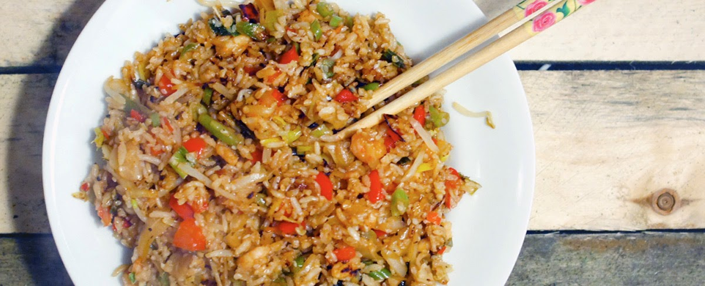

Fried rice bestaat al eeuwen! Fried rice is, zoals de naam al zegt, gebakken rijst. Hierbij worden diverse groenten en vlees toegevoegd om een smaaksensatie te creeëren. Fried rice komt van oorsprong uit Azië. Vaak wordt het gemaakt met "leftovers" uit de koelkast. Je kan het niet zo gek verzinnen of iemand heeft het wel eens in zijn fried rice gestopt!
Ingrediënten
- 1 theeglas rijst
- 1 Rode paprika
- 3 eieren
- 1 prei
- Soyasaus
- 2 uien
- 1 bosje bos-ui
- 1 Sjalot
- 2 teentjes Knoflook
- Ketjap Manis
Bereidingswijze
- Verwarm 3 liter water en kook de rijst in 8 minuten gaar. Giet dit af en zet het, wanneer afgekoeld, in de koelkast.
- maak een mengsel van de 3 eieren en gooi dit in een hete pan. Blijf dit met een spatel roeren en in stukjes hakken tot je scrambled eggs krijgt. leg dit apart.
- Snijd de ui, knoflook en sjalot in kleine blokjes en zet apart.
- Snijd de rest van de groente in kleine blokjes en zet dit ook apart.
- Pak een grote wokpan en verhit hierin een klein beetje boter of olie (naar keuze). Fruit hierin de knoflook, ui en sjalot.
- Voeg de rest van de groente toe, voeg 1 eetlepel soyasaus toe en bak dit 5/6 minuten op middel-hoog vuur.
- Haal de koude rijst uit de koelkast en voeg dit toe. Roer goed door zodat alle rijst en groente goed gemixed zijn. Zet vervolgens het vuur op de hoogste stand en verspreid de mix over de pan. Gooi dit elke 30 seconde om, het eten is klaar als de rijst lichtelijk bruin wordt!
- Leg de helft van het eten op een bord en voeg ketjap manis toe naar smaak. Leg hier stukjes ei bovenop en eventueel een paar ringetjes bos ui.